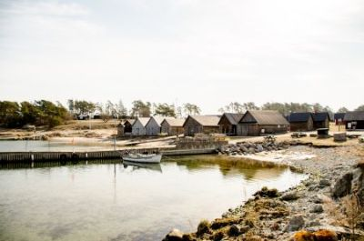

Gästhamnen

Gästbåtar är hjärtligt välkomna!
Vid normalvattendjup är djupet 3 meter i huvuddelen av hamnen. Vatten och el finns utdraget på kajerna. I land kan vi erbjuda ett modernt servicehus med WC, dusch och tvättmaskin.
Ring gärna hamnfogden för att få reda på aktuellt läge.
Dygnshyra 150:- /dygn*
El-anslutning 50:-/dygn
*inkluderat kort för tillträde till servicehuset och 20:- för två duschar
Hamnfogde Bo Lautin Mobil
0707 - 92 03 10